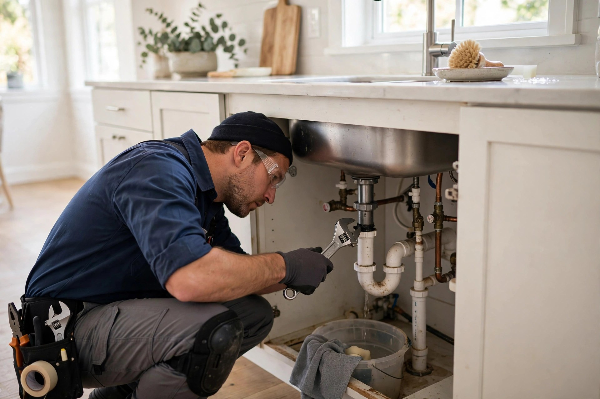
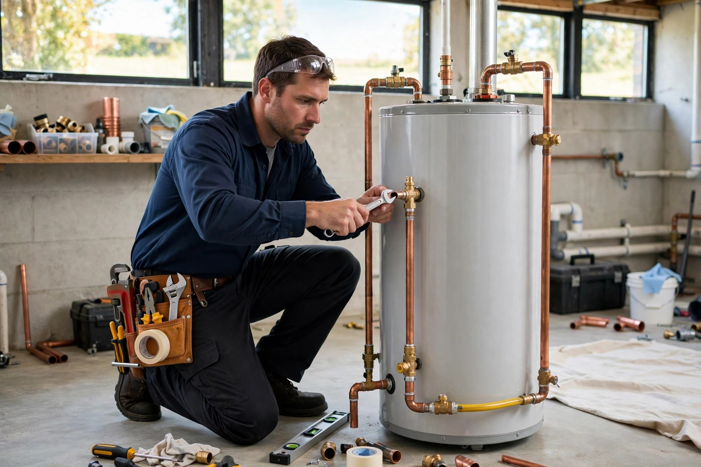
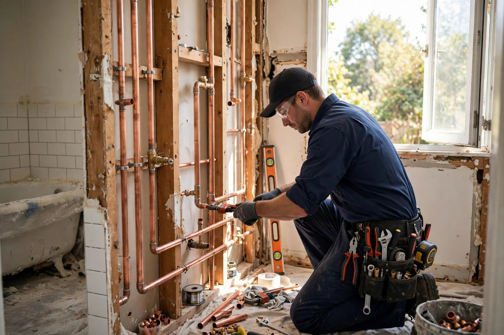
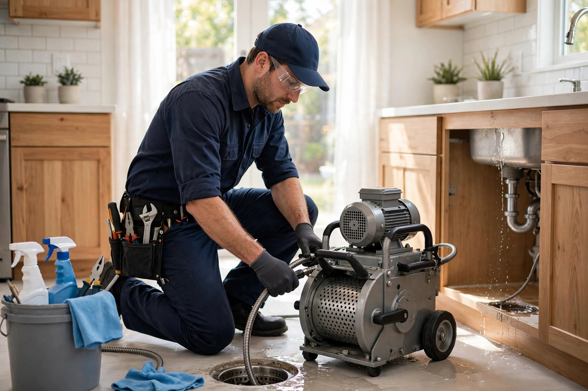

Réparation
Réparation de plomberie : fuites, robinets, toilettes.

Terrebonne, QC · Plombier
Plombier à Terrebonne — réparation, rénovation, débouchage et chauffe-eau. Service fiable, estimation claire avant de commencer.
Nos services
Réparation de plomberie : fuites, robinets, toilettes.
Plomberie pour rénovations, salles de bain et cuisines.
Débouchage de drains et d'égouts.
Installation et remplacement de chauffe-eau.
Remplacement et mise à jour de tuyauterie.
Plomberie complète pour constructions neuves.

Pourquoi nous choisir
Plomberie Mario Thivierge, c'est Mario Thivierge — plombier à Terrebonne. Réparation, rénovation, débouchage et chauffe-eau : un service fiable avec une estimation claire avant de commencer.
En images


Bon à savoir
Oui — débouchage de drains et d'égouts.
Oui — installation et remplacement de chauffe-eau.
Oui — entrepreneur licencié avec RBQ 5656-6722-01. Tous nos travaux sont conformes.
Toujours. Appelez et on discute de votre projet avec un prix clair d'avance.
Contactez-nous